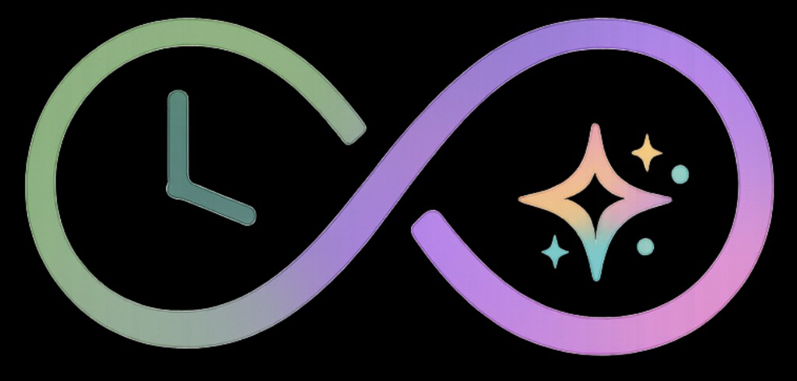

День с 7:00 до 21:00. До пяти дел в час — или одно на весь час.

TiLi — календарь твоего времени
Не список «на потом», а сетка часов: каждое дело занимает своё место в дне. На телефоне, без подписки.
iPhone / Android: «Поделиться» → «На экран Домой» — работает как приложение.
Что внутри
Розовый — работа, голубой — личное, зелёный — семья.
Год, месяц, неделя, день. На неделе колонки плавно сужаются до одного дня.
Отдельная вкладка: колесо сфер жизни, шаги к мечте, связь с делом в календаре.
Удержите плюс, скажите дело — TiLi подставит дату и категорию. Сохраняете сами.
Баннеры на телефоне, если включить в настройках и добавить PWA на экран «Домой».
Гость без регистрации
Бесплатно
PWA
Ваши данные
Задачи и желания хранятся в браузере на этом устройстве. Мы не ведём облачную синхронизацию между телефонами.
Резервная копия — выгрузка JSON в настройках. Перенос на новый телефон — через файл, без нашего сервера.
Регистрация в приложении пока локальная: это не бэкап и не sync.
Поддержать разработку
Добровольный перевод — в приложении: Настройки → Поддержка. На функции это не влияет.